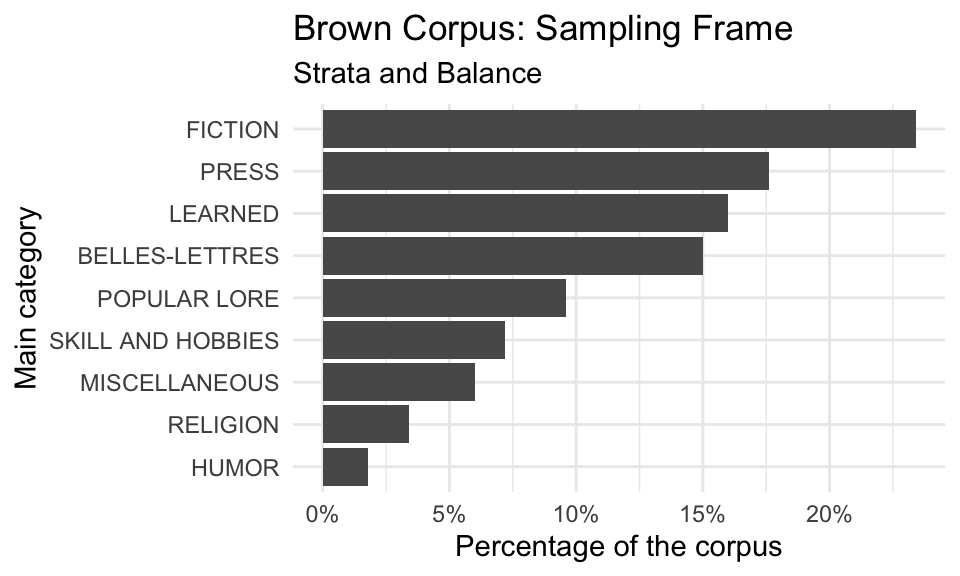

2 Understanding data
The plural of anecdote is not data.
— Marc Bekoff
- What are the distinct types of data and how do they differ?
- What is information and what form does it take?
- What is the importance of documentation in reproducible research?
In this chapter I cover the starting concepts in our journey to understand how to derive insight from data, illustrated in the DIKI Hierarchy (Figure 1.5), focusing specifically on the first two levels: Data and Information. We will see that what is commonly referred to as ‘data’ everyday uses is broken into three distinct categories, two of which are referred to as data and the third is known as information. We will introduce the key concepts and structural characteristics which define information. We will also cover the importance of documentation of data and datasets in quantitative research.
What: Objects, Packages and functions
How: In the R Console pane load swirl, run swirl(), and follow prompts to select the lesson.
Why: To introduce you to the main types of objects in R and to understand the role and use of functions and packages in R programming.
2.1 Data
Data is data, right? The term ‘data’ is so common in popular vernacular it is easy to assume we know what we mean when we say ‘data’. But as in most things, where there are common assumptions there are important details the require more careful consideration. Let’s turn to the first key distinction that we need to make to start to break down the term ‘data’: the difference between populations and samples.
2.1.1 Populations
The first thing that comes to many people’s mind when the term population is used is human populations. Say for example –What’s the population of Milwuakee? When we speak of a population in these terms we are talking about the total sum of people living within the geographical boundaries of Milwaukee. In concrete terms, a population is the objective make up of an idealized set of objects and events in reality. Key terms here are objective and idealized. Although we can look up the US Census report for Milwaukee and retrieve a figure for the population, this cannot truly be the population. Why is that? Well, whatever method that was used to derive this numerical figure was surely incomplete. If not incomplete, by the time someone recorded the figure some number of residents of Milwaukee moved out, moved in, were born, or passed away –the figure is no longer the true population.
Likewise when we talk about populations in terms of language we dealing with an objective and idealized aspect of reality. Let’s take the words of the English language as an analog to our previous example population. In this case the words are the people and English is the bounding characteristic. Just as people, words move out, move in, are born, and pass away. Any compendium of the words of English at any moment is almost instananeously incomplete. This is true for all populations, save those in which the bounding characteristics select a narrow slice of reality which is objectively measurable and whose membership is fixed (the complete works of Shakespeare, for example).
In sum, (most) populations are amorphous moving targets. We objectively hold them to exist, but in practical terms we often cannot nail down the specifics of populations. So how do researchers go about studying populations if they are theoretically impossible to access directly? The strategy employed is called sampling.
2.1.2 Samples
A sample is the product of a subjective process of selecting a finite set of observations from an objective population with the goal of capturing the relevant characteristics of the target population. Although there are strategies to minimize the mismatch between the characteristics of the subjective sample and objective population, it is important to note that it is almost certainly true that any given sample diverges from the population it aims to represent to some degree. The aim, however, is to employ a series of sampling decisions, which are collectively known as a sampling frame, that maximize the chance of representing the population.
What are the most common sampling strategies? First sample size. A larger sample will always be more representative than a smaller sample. Sample size, however, is not enough. It is not hard to imagine a large sample which by chance captures only a subset of the features of the population. A next step to enhance sample representativeness is apply random sampling. Together a large random sample has an even better chance of reflecting the main characteristics of the population better than a large or random sample. But, random as random is, we still run the risk of acquiring a skewed sample (i.e a sample which does not mirror the target population).
To help mitigate these issues, there are two more strategies that can be applied to improve sample representativeness. Note, however, that while size and random samples can be applied to any sample with little information about internal characteristics of the population, these next two strategies require decisions depend on the presumed internal characteristics of the population. The first of these more informed sampling strategies is called stratified sampling. Stratified samples make (educated) assumptions about sub-components within the population of interest. With these sub-populations in mind, large random samples are acquired for each sub-population, or strata. At a minimum, stratified samples can be no less representative than random sampling alone, but the chances that the sample is better increases. Can there be problems in the approach? Yes, and on two fronts. First knowledge of the internal components of a population are often based on a limited or incomplete knowledge of the population. In other words, strata are selected subjectively by researchers using various heuristics some of which are based on some sense of ‘common knowledge’. The second front on which stratified sampling can err concerns the relative sizes of the sub-components relative to the whole population. Even if the relevant sub-components are identified, their relative size adds another challenge which researchers must address in order to maximize the representativeness of a sample. To attempt to align, or balance, the relative sizes of the samples for the strata is the second population-informed sampling strategy.
2.1.3 Corpora
A key feature of a sample is that it is purposely selected. Samples are not simply a collection or set of data from the population. Samples are rigorously selected with an explicit target population in mind. In text analysis a purposely sampled collection of texts, of the type defined here, is known as a corpus. For this same reason a set of texts or documents which have not been selected along a purposely selected sampling frame is not a corpus. The sampling frame, and therefore the populations modeled, in any given corpus most likely will vary and for this reason it is not a safe assumption that any given corpus is equally applicable for any and every research question. Corpus development (i.e. sampling) is purposeful, and the characteristics of the corpus development process should be made explicit through documentation. Therefore vetting a corpus sample for its applicability to a research goal is a key step in that a research must take to ensure the integrity of the research findings.
The Brown Corpus is widely recognized as one of the first large, machine-readable corpora. It was compiled by Kucera and Francis (1967). Consult the documentation for this corpus. Can you determine what language population this corpus aims to represent? Given the sampling frame for this corpus (in the documentation and summarized in Figure 2.1), what types of research might this corpus support or not support?

Types
With the notion of sampling frames in mind, some corpora are compiled with the aim to be of general purpose (general or reference corpora), and some with much more specialized sampling frames (specialized corpora). For example, the American National Corpus (ANC) or the British National Corpus (BNC) are corpora which aim to model (represent/ reflect) the general characteristics of the English language, the former of American English and the later British English. These are ambitious projects, and require significant investments of time in corpus design and then in implementation (and continued development) that are usually undertaken by research teams (Ädel 2020).
Specialized corpora aim to represent more specific populations. The Santa Barbara Corpus of Spoken American English (SBCSAE), as you can imagine from the name of the resource, aims to model spoken American English. No claim to written English is included. There are even more specific types of corpora which attempt to model other types of sub-populations such as scientific writing, computer-mediated communication (CMC), language use in specific regions of the world, a country, or a region, etc.
 Grieve, Nini, and Guo (2018) compiled a 8.9 billion-word corpus of geotagged posts from Twitter between 2013-2014 in the United States. The authors provide a search interface to explore relationship between lexical usage and geographic location. Explore this corpus searching for terms related to slang (“hella”, “wicked”), geographical (“mountain”, “river”), meteorological (“snow”, “rain”), and/ or any other term types. What types of patterns do you find? What are the benefits and/ or limitations of this type of data and/ or interface?
Grieve, Nini, and Guo (2018) compiled a 8.9 billion-word corpus of geotagged posts from Twitter between 2013-2014 in the United States. The authors provide a search interface to explore relationship between lexical usage and geographic location. Explore this corpus searching for terms related to slang (“hella”, “wicked”), geographical (“mountain”, “river”), meteorological (“snow”, “rain”), and/ or any other term types. What types of patterns do you find? What are the benefits and/ or limitations of this type of data and/ or interface?
Another set of specialized corpora are resources which aim to compile texts from different languages or different language varieties for direct or indirect comparison. Corpora that are directly comparable, that is they include source and translated texts, are called parallel corpora. Parallel corpora include different languages or language varieties that are indexed and aligned at some linguistic level (i.e. word, phrase, sentence, paragraph, or document), see OPUS. Corpora that are compiled with different languages or language varieties but are not directly aligned are called comparable corpora. The comparable language or language varieties are sampled with the same or similar sampling frame, for example Brown and LOB corpora.
The aim of the quantitative text researcher is to select the corpus or corpora (plural of corpus) which best aligns with the purpose of the research. Therefore a general corpus such as the ANC may be better suited to address a question dealing with the way American English works, but this general resource may lack detail in certain areas, such as medical language, that may be vital for a research project aimed at understanding changes in medical terminology.
Sources
The most common source of data used in contemporary quantitative research is the internet. On the web an investigator can access corpora published for research purposes and language used in natural settings that can be coerced by the investigator into a corpus. Many organizations exist around the globe that provide access to corpora in browsable catalogs, or repositories. There are repositories dedicated to language research, in general, such as the Language Data Consortium or for specific language domains, such as the language acquisition repository TalkBank. It is always advisable to start looking for the available language data in a repository. The advantage of beginning your data search in repositories is that a repository, especially those geared towards the linguistic community, will make identifying language corpora faster than through a general web search. Furthermore, repositories often require certain standards for corpus format and documentation for publication. A standardized resource many times will be easier to interpret and evaluate for its appropriateness for a particular research project.
In the table below I’ve compiled a list of some corpus repositories to help you get started.
| Resource | Description |
|---|---|
| BYU corpora | A repository of corpora that includes billions of words of data. |
| COW (COrpora from the Web) | A collection of linguistically processed gigatoken web corpora |
| Leipzig Corpora Collection | Corpora in different languages using the same format and comparable sources. |
| Linguistic Data Consortium | Repository of language corpora |
| LRE Map | Repository of language resources collected during the submission process for the Language Resource and Evaluation Conference (LREC). |
| NLTK language data | Repository of corpora and language datasets included with the Python package NLTK. |
| OPUS - an open source parallel corpus | Repository of translated texts from the web. |
| TalkBank | Repository of language collections dealing with conversation, acquisition, multilingualism, and clinical contexts. |
| The Language Archive | Various corpora and language datasets |
| The Oxford Text Archive (OTA) | A collection of thousands of texts in more than 25 different languages. |
Repositories are by no means the only source of corpora on the web. Researchers from around the world provide access to corpora and other data sources on their own sites or through data sharing platforms. Corpora of various sizes and scopes will often be accessible on a dedicated homepage or appear on the homepage of a sponsoring institution. Finding these resources is a matter of doing a web search with the word ‘corpus’ and a list of desired attributes, including language, modality, register, etc. As part of a general movement towards reproducibility more corpora are available on the web than ever before. Therefore data sharing platforms supporting reproducible research, such as GitHub, Zenodo, Re3data, OSF, etc., are a good place to look as well, if searching repositories and targeted web searches do not yield results.
In the table below you will find a list of corpus resources and datasets.
| Resource | Description |
|---|---|
| CHILDES Treebank | A corpus derived from several corpora from the American English section of CHILDES with the goal to annotate child-directed speech utterance transcriptions with phrase structure tree information. |
| Cornell Movie-Dialogs Corpus | A corpus containing a large metadata-rich collection of fictional conversations extracted from raw movie scripts. |
| Corpus Argentino | Corpus of Argentine Spanish |
| Corpus of Spanish in Southern Arizona | Spanish varieties spoken in Arizona. |
| Europarl Parallel Corpus | A parallel corpus extracted from the proceedings of the European Parliament Proceedings between 1996-2011. |
| Google Ngram Viewer | Google web corpus |
| International Corpus of English (ICE) | The International Corpus of English (ICE) began in 1990 with the primary aim of collecting material for comparative studies of English worldwide. |
| OpenSubtitles2011 | A collection of documents from http://www.opensubtitles.org/. |
| Russian National Corpus | A corpus of modern Russian language incorporating over 300 million words. |
| The Big Bad NLP Database - Quantum Stat | NLP datasets |
| The Switchboard Dialog Act Corpus | A corpus of 1155 5-minute conversations in American English, comprising 205,000 utterances and 1.4 million words, from the Switchboard corpus of telephone conversations. |
| Welcome to LANGSNAP - LANGSNAP | The aim of this repository is to promote research on the learning of French and Spanish as L2, by making parallel learner corpora for each language freely available to the research community. |
| Westbury Lab Web Site: Usenet Corpus Download | This corpus is a collection of public USENET postings. This corpus was collected between Oct 2005 and Jan 2011, and covers 47,860 English language, non-binary-file news groups (see list of newsgroups included with the corpus for details) |
Language corpora prepared by researchers and research groups listed on repositories or hosted by the researchers themselves is often the first place to look for data. The web, however, contains a wealth of language and language-related data that can be accessed by researcher to compile their own corpus. There are two primary ways to attain language data from the web. The first is through the process of web scraping. Web scraping is the process of harvesting data from the web either manually or (semi-)automatically from the actual public-facing web. The second way to acquire data from the web is through an Application Programming Interface (API). APIs are, as the title suggests, programming interfaces which allow access, under certain conditions, to information that a website or database accessible via the web contains.
The table below lists some R packages that serve to interface language data directly through R.
| Resource | Description |
|---|---|
| aRxiv | R package interface to query arXiv, a repository of electronic preprints for computer science, mathematics, physics, quantitative biology, quantitative finance, and statistics. |
| crminer | R package interface focusing on getting the user full text via the Crossref search API. |
| dvn | R package interface to access to the Dataverse Network APIs. |
| fulltext | R package interface to query open access journals, such as PLOS. |
| gutenbergr | R package interface to download and process public domain works from the Project Gutenberg collection. |
| internetarchive | R package interface to query the Internet Archive. |
| newsflash | R package interface to query the Internet Archive and GDELT Television Explorer |
| oai | R package interface to query any OAI-PMH repository, including Zenodo. |
| rfigshare | R package interface to query the data sharing platform FigShare. |
| rtweet | R client for interacting with Twitter’s APIs |
Data for language research is not limited to (primary) text sources. Other sources may include processed data from previous research; word lists, linguistic features, etc.. Alone or in combination with text sources this data can be a rich and viable source of data for a research project.
Below I’ve included some processed language resources.
| Resource | Description |
|---|---|
| English Lexicon Project | Access to a large set of lexical characteristics, along with behavioral data from visual lexical decision and naming studies. |
| lingtypology | R package interface to connect with the Glottolog database and provides additional functionality for linguistic mapping. |
| The Corpus of Linguistic Acceptability (CoLA) | A corpus that consists of 10657 sentences from 23 linguistics publications, expertly annotated for acceptability (grammaticality) by their original authors. |
| The Moby lexicon project | Language wordlists and resources from the Moby project. |
The list of data available for language research is constantly growing. I’ve document very few of the wide variety of resources. Below I’ve included attempts by others to provide a summary of the corpus data and language resources available.
| Resource | Description |
|---|---|
| Learner corpora around the world | A listing of learner corpora around the world |
| Machine Learning Datasets | Papers With Code | A free and open resource with Machine Learning papers, code, and evaluation tables. |
| Stanford NLP corpora | Listing of corpora and language resources aimed at the NLP community. |
| Where can you find language data on the web? | Listing of various corpora and language datasets. |
Explore some of the resources listed above and consider their sampling frames. Can you think of a research question or questions that this resource may be well-suited to support research into? What types of questions would be less-than-adequate for a given resource?
Formats
A corpus will often include various types of non-linguistic attributes, or meta-data, as well. Ideally this will include information regarding the source(s) of the data, dates when it was acquired or published, and other author or speaker information. It may also include any number of other attributes that were identified as potentially important in order to appropriately document the target population. Again, it is key to match the available meta-data with the goals of your research. In some cases a corpus may be ideal in some aspects but not contain all the key information to address your research question. This may mean you will need to compile your own corpus if there are fundamental attributes missing. Before you consider compiling your own corpus, however, it is worth investigating the possibility of augmenting an available corpus to bring it inline with your particular goals. This may include adding new language sources, harnessing software for linguistic annotation (part-of-speech, syntactic structure, named entities, etc.), or linking available corpus meta-data to other resources, linguistic or non-linguistic.
Corpora come in various formats, the main three being: running text, structured documents, and databases. The format of a corpus is often influenced by characteristics of the data but may also reflect an author’s individual preferences as well. It is typical for corpora with few meta-data characteristics to take the form of running text.
Running text sample from the Europarle Parallel Corpus.
> Resumption of the session
> I declare resumed the session of the European Parliament adjourned on
Friday 17 December 1999, and I would like once again to wish you a
happy new year in the hope that you enjoyed a pleasant festive period.
> Although, as you will have seen, the dreaded 'millennium bug' failed
to materialise, still the people in a number of countries suffered a
series of natural disasters that truly were dreadful.
> You have requested a debate on this subject in the course of the next
few days, during this part-session.
> In the meantime, I should like to observe a minute' s silence, as a
number of Members have requested, on behalf of all the victims
concerned, particularly those of the terrible storms, in the various
countries of the European Union.
> Please rise, then, for this minute' s silence.
> (The House rose and observed a minute' s silence)
> Madam President, on a point of order.
> You will be aware from the press and television that there have been
a number of bomb explosions and killings in Sri Lanka.
> One of the people assassinated very recently in Sri Lanka was Mr
Kumar Ponnambalam, who had visited the European Parliament just a few
months ago.In corpora with more meta-data, a header may be appended to the top of each running text document or the meta-data may be contained in a separate file with appropriate coding to coordinate meta-data attributes with each text in the corpus.
Meta-data header sample from the Switchboard Dialog Act Corpus.
> FILENAME: 4325_1632_1519
> TOPIC#: 323
> DATE: 920323
> TRANSCRIBER: glp
> UTT_CODER: tc
> DIFFICULTY: 1
> TOPICALITY: 3
> NATURALNESS: 2
> ECHO_FROM_B: 1
> ECHO_FROM_A: 4
> STATIC_ON_A: 1
> STATIC_ON_B: 1
> BACKGROUND_A: 1
> BACKGROUND_B: 2
> REMARKS: None.
>
>
=========================================================================
>
>
> o A.1 utt1: Okay. /
> qw A.1 utt2: {D So, }
>
> qy^d B.2 utt1: [ [ I guess, +
>
> + A.3 utt1: What kind of experience [ do you, + do you ] have, then
with child care? /
>
> + B.4 utt1: I think, ] + {F uh, } I wonder ] if that worked. /
>
> qy A.5 utt1: Does it say something? /
>
> sd B.6 utt1: I think it usually does. /
> ad B.6 utt2: You might try, {F uh, } /
> h B.6 utt3: I don't know, /
> ad B.6 utt4: hold it down a little longer, /
> ad B.6 utt5: {C and } see if it, {F uh, } -/When meta-data and/ or linguistic annotation increases in complexity it is common to structure each corpus document more explicitly with a markup language such as XML (Extensible Markup Language) or organize relationships between language and meta-data attributes in a database.
XML format for meta-data (and linguistic annotation) from the Brown Corpus.
> <TEI
xmlns="http://www.tei-c.org/ns/1.0"><teiHeader><fileDesc><titleStmt><title>Sample
A01 from The Atlanta Constitution</title><title type="sub"> November 4,
1961, p.1 "Atlanta Primary ..."
> "Hartsfield Files"
> August 17, 1961, "Urged strongly ..."
> "Sam Caldwell Joins"
> March 6,1961, p.1 "Legislators Are Moving" by Reg Murphy
> "Legislator to fight" by Richard Ashworth
> "House Due Bid..."
> p.18 "Harry Miller Wins..."
> </title></titleStmt><editionStmt><edition>A part of the XML version
of the Brown Corpus</edition></editionStmt><extent>1,988 words 431
(21.7%) quotes 2
symbols</extent><publicationStmt><idno>A01</idno><availability><p>Used
by permission of The Atlanta ConstitutionState News Service (H), and
Reg Murphy (E).</p></availability></publicationStmt><sourceDesc><bibl>
The Atlanta
Constitution</bibl></sourceDesc></fileDesc><encodingDesc><p>Arbitrary
Hyphen: multi-million [0520]</p></encodingDesc><revisionDesc><change
when="2008-04-27">Header auto-generated for TEI
version</change></revisionDesc></teiHeader>
> <text xml:id="A01" decls="A">
> <body><p><s n="1"><w type="AT">The</w> <w type="NP"
subtype="TL">Fulton</w> <w type="NN" subtype="TL">County</w> <w
type="JJ" subtype="TL">Grand</w> <w type="NN" subtype="TL">Jury</w> <w
type="VBD">said</w> <w type="NR">Friday</w> <w type="AT">an</w> <w
type="NN">investigation</w> <w type="IN">of</w> <w
type="NPg">Atlanta's</w> <w type="JJ">recent</w> <w
type="NN">primary</w> <w type="NN">election</w> <w
type="VBD">produced</w> <c type="pct">``</c> <w type="AT">no</w> <w
type="NN">evidence</w> <c type="pct">''</c> <w type="CS">that</w> <w
type="DTI">any</w> <w type="NNS">irregularities</w> <w
type="VBD">took</w> <w type="NN">place</w> <c type="pct">.</c> </s>
> </p>Although there has been a push towards standardization of corpus formats, most available resources display some degree of idiosyncrasy. Being able to parse the structure of a corpus is a skill that will develop with time. With more experience working with corpora you will become more adept at identifying how the data is stored and whether its content and format will serve the needs of your analysis.
2.2 Information
Identifying an adequate corpus resource for the target research question is the first step in moving a quantitative text research project forward. The next step is to select the components or characteristics of this resource that are relevant for the research and then move to organize the attributes of this data into a more useful and informative format. This is the process of converting a corpus into a dataset –a tabular representation of the information to be leveraged in the analysis.
2.2.1 Structure
Data alone is not informative. Only through explicit organization of the data in a way that makes relationships explicit does the data become information. In this form, our data is called a dataset. This is a particularly salient hurdle in text analysis research. Many textual sources are unstructured data –that is, the relationships that will be used in the analysis have yet to be purposefully drawn and organized from the text to make the relationships meaningful and useful for analysis.
For the running text in the Europarle Corpus, we know that there are files which are the source text (original) and files that correspond to the target text (translation). In Table 2.1 we see that this text has been organized so that there are columns corresponding to the type and sentence with an additional sentence_id column to keep an index of how the sentences are aligned.
It is conventional to work with column names for datasets in R using the same conventions that are used for naming objects. It is a matter of taste which convention is used, but I have adopted snake case as my personal preference. There are also alternatives. Regardless of the convention you choose, it is good practice to be consistent.
It is also of note that the column names should be balanced for meaningfulness and brevity. This brevity is of practical concern but can be somewhat opaque. For questions into the meaning of the column and is values consult the resource’s dataset documentation.
| type | sentence_id | sentence |
|---|---|---|
| Source | 1 | Resumption of the session |
| Target | 1 | Reanudación del período de sesiones |
| Source | 2 | I declare resumed the session of the European Parliament adjourned on Friday 17 December 1999, and I would like once again to wish you a happy new year in the hope that you enjoyed a pleasant festive period. |
| Target | 2 | Declaro reanudado el período de sesiones del Parlamento Europeo, interrumpido el viernes 17 de diciembre pasado, y reitero a Sus Señorías mi deseo de que hayan tenido unas buenas vacaciones. |
| Source | 3 | Although, as you will have seen, the dreaded ‘millennium bug’ failed to materialise, still the people in a number of countries suffered a series of natural disasters that truly were dreadful. |
| Target | 3 | Como todos han podido comprobar, el gran “efecto del año 2000” no se ha producido. En cambio, los ciudadanos de varios de nuestros países han sido víctimas de catástrofes naturales verdaderamente terribles. |
| Source | 4 | You have requested a debate on this subject in the course of the next few days, during this part-session. |
| Target | 4 | Sus Señorías han solicitado un debate sobre el tema para los próximos días, en el curso de este período de sesiones. |
| Source | 5 | In the meantime, I should like to observe a minute’ s silence, as a number of Members have requested, on behalf of all the victims concerned, particularly those of the terrible storms, in the various countries of the European Union. |
| Target | 5 | A la espera de que se produzca, de acuerdo con muchos colegas que me lo han pedido, pido que hagamos un minuto de silencio en memoria de todas las víctimas de las tormentas, en los distintos países de la Unión Europea afectados. |
| Source | 6 | Please rise, then, for this minute’ s silence. |
| Target | 6 | Invito a todos a que nos pongamos de pie para guardar un minuto de silencio. |
| Source | 7 | (The House rose and observed a minute’ s silence) |
| Target | 7 | (El Parlamento, de pie, guarda un minuto de silencio) |
| Source | 8 | Madam President, on a point of order. |
| Target | 8 | Señora Presidenta, una cuestión de procedimiento. |
| Source | 9 | You will be aware from the press and television that there have been a number of bomb explosions and killings in Sri Lanka. |
| Target | 9 | Sabrá usted por la prensa y la televisión que se han producido una serie de explosiones y asesinatos en Sri Lanka. |
| Source | 10 | One of the people assassinated very recently in Sri Lanka was Mr Kumar Ponnambalam, who had visited the European Parliament just a few months ago. |
| Target | 10 | Una de las personas que recientemente han asesinado en Sri Lanka ha sido al Sr. Kumar Ponnambalam, quien hace pocos meses visitó el Parlamento Europeo. |
Other corpus resources are semi-structured data –that is, there are some characteristics which are structured, but other which are not.
The Switchboard Dialog Act Corpus is an example of a semi-structured resource. It has meta-data associated with each of the 1,155 conversations in the corpus. In Table 2.2 a language-relevant sub-set of the meta-data is associated with each utterance.
| doc_id | speaker_id | topic_num | topicality | naturalness | damsl_tag | speaker | utterance_num | utterance_text |
|---|---|---|---|---|---|---|---|---|
| 4325 | 1632 | 323 | 3 | 2 | o | A | 1 | Okay. / |
| 4325 | 1632 | 323 | 3 | 2 | qw | A | 2 | {D So, } |
| 4325 | 1519 | 323 | 3 | 2 | qy^d | B | 1 | [ [ I guess, + |
| 4325 | 1632 | 323 | 3 | 2 | + | A | 1 | What kind of experience [ do you, + do you ] have, then with child care? / |
| 4325 | 1519 | 323 | 3 | 2 | + | B | 1 | I think, ] + {F uh, } I wonder ] if that worked. / |
Relatively fewer resources are structured datasets. In these cases a high amount of meta-data and/ or linguistic annotation is included in the corpus. The format convention, however, varies from resource to resource. Some of the formats are programming general (.csv, .xml, .json, etc.) and others are resource specific (.cha, .utt, .prd, etc.). In Table 2.3 the XML version of the Brown Corpus is represented in tabular format. Note that along with other meta-data variables, it also contains a variable with linguistic annotation for grammatical category (pos part-of-speech) of each word.
| document_id | category | words | pos |
|---|---|---|---|
| 01 | A | The | AT |
| 01 | A | Fulton | NP |
| 01 | A | County | NN |
| 01 | A | Grand | JJ |
| 01 | A | Jury | NN |
| 01 | A | said | VBD |
| 01 | A | Friday | NR |
| 01 | A | an | AT |
| 01 | A | investigation | NN |
| 01 | A | of | IN |
Tidy Data
The selection of the attributes from a corpus and the juxtaposition of these attributes in a relational format, or dataset, that converts data into information is known as data curation. The process of data curation minimally involves creating a base dataset, or derived dataset, which establishes the main informational associations according to philosophical approach outlined by Wickham (2014). In this work, a tidy dataset refers both to the structural (physical) and informational (semantic) organization of the dataset. Physically, a tidy dataset is a tabular data structure where each row is an observation and each column is a variable that contains measures of a feature or attribute of each observation. Each cell where a given row-column intersect contains a value which is a particular attribute of a particular observation for the particular observation-feature pair also known as a data point.

Semantic value
Semantic value in a tidy dataset is derived from the association of this physical structure along the two dimensions of this rectangular format. First, each column is a variable which reflects measures for a particular attribute. In the Europarle Corpus dataset, in Table Table 2.1, for example, the type column measures the type of text, either Source or Target. Columns can contain measures which are qualitative or quantitative, that is character-based or numeric. Second, each row is an observation that contains all of the variables associated with the primary unit of observation. The primary unit of observation the variable that is the essential focus of the informational structure. In this same dataset the first observation contains the type, sentence_id, and the sentence. As this dataset is currently structured the primary unit of investigation is the sentence as each of the other variables have measures that characterize each value of sentence.
The decision as to what the primary unit of observation is is fundamentally guided by the research question, and therefore highly specific to the particular research project. Say instead we wanted to focus on words instead of sentences. The dataset would need to be transformed such that a new variable (words) would be created to contain each word in the corpus.
| type | sentence_id | words |
|---|---|---|
| Source | 1 | Resumption |
| Source | 1 | of |
| Source | 1 | the |
| Source | 1 | session |
| Target | 1 | Reanudación |
| Target | 1 | del |
| Target | 1 | período |
| Target | 1 | de |
| Target | 1 | sesiones |
The values for the variables type and sentence_id maintain the necessary description for each word to ensure the required semantic relationships to identify the particular attributes for each word observation. This dataset may seem redundant in that the values for type and sentence_id are repeated numerous times but this ‘redundancy’ makes the relationship between each variable associated with the primary unit of investigation explicit. This format makes a tidy dataset a versatile format for researchers to conduct analyses in a powerful and flexible way, as we will see throughout this textbook.
It is important to make clear that data in tabular format in itself does not constitute a dataset, in the tidy sense we will be using. Data can be organized in many ways which do not make relationships between variables and observations explicit.
All tabular data does not have the ‘tidy’ format that I have described here. Can you think of examples of tabular information that would not be in a tidy format?
2.2.2 Transformation
At this point have introduced the first step in data curation in which the original data is converted into a relational dataset (derived dataset) and highlighted the importance of this informational structure for setting the stage for data analysis. However, the primary derived dataset is often not the final organizational step before proceeding to statistical analysis. Many times, if not always, the derived dataset requires some manipulation or transformation to prepare the dataset for the specific analysis approach to be taken. This is another level of human intervention and informational organization, and therefore another step forward in our journey from data to insight and as such a step up in the DIKI hierarchy. Common types of transformations include cleaning variables (normalization), separating or eliminating variables (recoding), creating new variables (generation), or incorporating others datasets which integrate with the existing variables (merging). The results of these transformations build on and manipulate the derived dataset and produce an analysis dataset. Let’s now turn to provide a select set of examples of each of these transformations using the datasets we have introduced in this chapter.
Normalization
The process of normalization aims to sanitize the values within a variable or set of variables. This may include removing whitespace, punctuation, numerals, or special characters or substituting uppercase for lowercase characters, numerals for word versions, acronyms for their full forms, irregular or incorrect spelling for accepted forms, or removing common words (stopwords), etc.
On inspecting the Europarle dataset (Table 2.1) we will see that there are sentence lines which do not represent actual parliament speeches. In Table 2.5 we see these lines.
| type | sentence_id | sentence |
|---|---|---|
| Source | 1 | Resumption of the session |
| Target | 1 | Reanudación del período de sesiones |
| Source | 7 | (The House rose and observed a minute’ s silence) |
| Target | 7 | (El Parlamento, de pie, guarda un minuto de silencio) |
A research project aiming to analyze speech would want to normalize this dataset removing these lines, as seen in Table 2.6.
| type | sentence_id | sentence |
|---|---|---|
| Source | 2 | I declare resumed the session of the European Parliament adjourned on Friday 17 December 1999, and I would like once again to wish you a happy new year in the hope that you enjoyed a pleasant festive period. |
| Target | 2 | Declaro reanudado el período de sesiones del Parlamento Europeo, interrumpido el viernes 17 de diciembre pasado, y reitero a Sus Señorías mi deseo de que hayan tenido unas buenas vacaciones. |
| Source | 3 | Although, as you will have seen, the dreaded ‘millennium bug’ failed to materialise, still the people in a number of countries suffered a series of natural disasters that truly were dreadful. |
| Target | 3 | Como todos han podido comprobar, el gran “efecto del año 2000” no se ha producido. En cambio, los ciudadanos de varios de nuestros países han sido víctimas de catástrofes naturales verdaderamente terribles. |
| Source | 4 | You have requested a debate on this subject in the course of the next few days, during this part-session. |
| Target | 4 | Sus Señorías han solicitado un debate sobre el tema para los próximos días, en el curso de este período de sesiones. |
| Source | 5 | In the meantime, I should like to observe a minute’ s silence, as a number of Members have requested, on behalf of all the victims concerned, particularly those of the terrible storms, in the various countries of the European Union. |
| Target | 5 | A la espera de que se produzca, de acuerdo con muchos colegas que me lo han pedido, pido que hagamos un minuto de silencio en memoria de todas las víctimas de las tormentas, en los distintos países de la Unión Europea afectados. |
| Source | 6 | Please rise, then, for this minute’ s silence. |
| Target | 6 | Invito a todos a que nos pongamos de pie para guardar un minuto de silencio. |
| Source | 8 | Madam President, on a point of order. |
| Target | 8 | Señora Presidenta, una cuestión de procedimiento. |
| Source | 9 | You will be aware from the press and television that there have been a number of bomb explosions and killings in Sri Lanka. |
| Target | 9 | Sabrá usted por la prensa y la televisión que se han producido una serie de explosiones y asesinatos en Sri Lanka. |
| Source | 10 | One of the people assassinated very recently in Sri Lanka was Mr Kumar Ponnambalam, who had visited the European Parliament just a few months ago. |
| Target | 10 | Una de las personas que recientemente han asesinado en Sri Lanka ha sido al Sr. Kumar Ponnambalam, quien hace pocos meses visitó el Parlamento Europeo. |
Another feature of this dataset which may require attention is the fact that the English lines include whitespace between possessive nouns.
| type | sentence_id | sentence |
|---|---|---|
| Source | 5 | In the meantime, I should like to observe a minute’ s silence, as a number of Members have requested, on behalf of all the victims concerned, particularly those of the terrible storms, in the various countries of the European Union. |
| Source | 6 | Please rise, then, for this minute’ s silence. |
This may affect another transformation process or subsequent analysis, so it may be a good idea to normalize these forms by removing the extra whitespace.
| type | sentence_id | sentence |
|---|---|---|
| Source | 5 | In the meantime, I should like to observe a minute’s silence, as a number of Members have requested, on behalf of all the victims concerned, particularly those of the terrible storms, in the various countries of the European Union. |
| Source | 6 | Please rise, then, for this minute’s silence. |
A final normalization case scenario involves changing converting all the text to lowercase. If the goal for the research is to count words at some point the fact that a word starts a sentence and by convention the first letter is capitalized will result distinct counts for words that are in essence the same (i.e. “In” vs. “in”).
| type | sentence_id | sentence |
|---|---|---|
| Source | 2 | i declare resumed the session of the european parliament adjourned on friday 17 december 1999, and i would like once again to wish you a happy new year in the hope that you enjoyed a pleasant festive period. |
| Target | 2 | declaro reanudado el período de sesiones del parlamento europeo, interrumpido el viernes 17 de diciembre pasado, y reitero a sus señorías mi deseo de que hayan tenido unas buenas vacaciones. |
| Source | 3 | although, as you will have seen, the dreaded ‘millennium bug’ failed to materialise, still the people in a number of countries suffered a series of natural disasters that truly were dreadful. |
| Target | 3 | como todos han podido comprobar, el gran “efecto del año 2000” no se ha producido. en cambio, los ciudadanos de varios de nuestros países han sido víctimas de catástrofes naturales verdaderamente terribles. |
| Source | 4 | you have requested a debate on this subject in the course of the next few days, during this part-session. |
| Target | 4 | sus señorías han solicitado un debate sobre el tema para los próximos días, en el curso de este período de sesiones. |
| Source | 5 | in the meantime, i should like to observe a minute’s silence, as a number of members have requested, on behalf of all the victims concerned, particularly those of the terrible storms, in the various countries of the european union. |
| Target | 5 | a la espera de que se produzca, de acuerdo con muchos colegas que me lo han pedido, pido que hagamos un minuto de silencio en memoria de todas las víctimas de las tormentas, en los distintos países de la unión europea afectados. |
| Source | 6 | please rise, then, for this minute’s silence. |
| Target | 6 | invito a todos a que nos pongamos de pie para guardar un minuto de silencio. |
| Source | 8 | madam president, on a point of order. |
| Target | 8 | señora presidenta, una cuestión de procedimiento. |
| Source | 9 | you will be aware from the press and television that there have been a number of bomb explosions and killings in sri lanka. |
| Target | 9 | sabrá usted por la prensa y la televisión que se han producido una serie de explosiones y asesinatos en sri lanka. |
| Source | 10 | one of the people assassinated very recently in sri lanka was mr kumar ponnambalam, who had visited the european parliament just a few months ago. |
| Target | 10 | una de las personas que recientemente han asesinado en sri lanka ha sido al sr. kumar ponnambalam, quien hace pocos meses visitó el parlamento europeo. |
Note that lowercasing text, and normalization steps in general, can come at a cost. For example, lowercasing the Europarle dataset sentences means we lose potentially valuable information; namely the ability to identify proper names (i.e. “Mr Kumar Ponnambalam”) and titles (i.e. “European Parliament”) directly from the orthographic forms. There are, however, transformation steps that can be applied which aim to recover ‘lost’ information in situations such as this and others.
Recoding
The process of recoding aims to recast the values of a variable or set of variables to a new variable or set of variables to enable more direct access. This may include extracting values from a variable, stemming or lemmatization of words, tokenization of linguistic forms (words, ngrams, sentences, etc.), calculating the lengths of linguistic units, removing variables that will not be used in the analysis, etc.
Words that we intuitively associate with a ‘base’ word can take many forms in language use. For example the word forms ‘investigation’, ‘investigation’, ‘investigate’, ‘investigated’, etc. are intuitively linked. There are two common methods that can be applied to create a new variable to facilitate the identification of these associations. The first is stemming. Stemming is a rule-based heuristic to reduce word forms to their stem or root form.
| document_id | category | words | pos | word_stems |
|---|---|---|---|---|
| 01 | A | The | AT | The |
| 01 | A | Fulton | NP | Fulton |
| 01 | A | County | NN | Counti |
| 01 | A | Grand | JJ | Grand |
| 01 | A | Jury | NN | Juri |
| 01 | A | said | VBD | said |
| 01 | A | Friday | NR | Fridai |
| 01 | A | an | AT | an |
| 01 | A | investigation | NN | investig |
| 01 | A | of | IN | of |
A few things to note here. First there are a number of stemming algorithms both for individual languages and distinct languages 1. Second not all words can be stemmed as they do not have alternate morphological forms (i.e. “The”, “of”, etc.). This generally related to the distinction between closed-class (articles, prepositions, conjunctions, etc.) and open-class (nouns, verbs, adjectives, etc.) grammatical categories. Third the stem generated for those words that can be stemmed result in forms that are not words themselves. Nonetheless, stems can be very useful for more easily extracting a set of related word forms.
As an example, let’s identify all the word forms for the stem ‘investig’.
| document_id | category | words | pos | word_stems |
|---|---|---|---|---|
| 01 | A | investigation | NN | investig |
| 01 | A | investigate | VB | investig |
| 03 | A | investigation | NN | investig |
| 03 | A | investigation | NN | investig |
| 07 | A | investigations | NNS | investig |
| 07 | A | investigate | VB | investig |
| 08 | A | investigation | NN | investig |
| 09 | A | investigation | NN | investig |
| 09 | A | investigating | VBG | investig |
| 09 | A | investigation | NN | investig |
We can see from the results in Table 2.11 that searching for word_stems that match ‘investig’ returns a set of stem-related forms. But it is worth noting that these forms cut across a number of grammatical categories. If instead you want to draw a distinction between grammatical categories, we can apply lemmatization. This process is distinct from stemming in two important ways: (1) inflectional forms are grouped by grammatical category and (2) the resulting forms are lemmas or ‘base’ forms of words.
| document_id | category | words | pos | word_lemmas |
|---|---|---|---|---|
| 01 | A | The | AT | The |
| 01 | A | Fulton | NP | Fulton |
| 01 | A | County | NN | County |
| 01 | A | Grand | JJ | Grand |
| 01 | A | Jury | NN | Jury |
| 01 | A | said | VBD | say |
| 01 | A | Friday | NR | Friday |
| 01 | A | an | AT | a |
| 01 | A | investigation | NN | investigation |
| 01 | A | of | IN | of |
To appreciate the difference between stemming and lemmatization, let’s compare a filter for word_lemmas which match ‘investigation’.
| document_id | category | words | pos | word_lemmas |
|---|---|---|---|---|
| 01 | A | investigation | NN | investigation |
| 03 | A | investigation | NN | investigation |
| 03 | A | investigation | NN | investigation |
| 07 | A | investigations | NNS | investigation |
| 08 | A | investigation | NN | investigation |
| 09 | A | investigation | NN | investigation |
| 09 | A | investigation | NN | investigation |
| 23 | A | investigation | NN | investigation |
| 25 | A | investigation | NN | investigation |
| 41 | A | investigation | NN | investigation |
Only lemma forms of ‘investigate’ which are nouns appear. Let’s run a similar search but for the lemma ‘be’.
| document_id | category | words | pos | word_lemmas |
|---|---|---|---|---|
| 01 | A | was | BEDZ | be |
| 01 | A | been | BEN | be |
| 01 | A | was | BEDZ | be |
| 01 | A | was | BEDZ | be |
| 01 | A | are | BER | be |
| 01 | A | are | BER | be |
| 01 | A | be | BE | be |
| 01 | A | is | BEZ | be |
| 01 | A | was | BEDZ | be |
| 01 | A | be | BE | be |
Again only words of the same grammatical category are returned. In this case the verb ‘be’ has many more inflectional forms than ‘investigate’.
Another form of recoding is to detect a pattern in the values of an existing variable and create a new variable whose values are the extracted pattern or register that the pattern occurs and/ or how many times it occurs. As an example, let’s count the number of disfluencies (‘uh’ or ‘um’) that occur in each utterance in utterance_text from the Switchboard Dialog Act Corpus. Note I’ve simplified the dataset dropping the non-relevant variables for this example.
| utterance_text | disfluency_count |
|---|---|
| Okay. / | 0 |
| {D So, } | 0 |
| [ [ I guess, + | 0 |
| What kind of experience [ do you, + do you ] have, then with child care? / | 0 |
| I think, ] + {F uh, } I wonder ] if that worked. / | 1 |
| Does it say something? / | 0 |
| I think it usually does. / | 0 |
| You might try, {F uh, } / | 1 |
| I don’t know, / | 0 |
| hold it down a little longer, / | 0 |
One of the most common forms of recoding in text analysis is tokenization. Tokenization is the process of recasting the text into smaller linguistic units. When working with text that has not been linguistically annotated, the most feasible linguistic tokens are words, ngrams, and sentences. While word and sentence tokens are easily understandable, ngram tokens need some explanation. An ngram is a sequence of either characters or words where n is the length of this sequence. The ngram sequences are drawn incrementally, so the bigrams (two-word sequences) for the sentence “This is an input sentence.” are:
this is, is an, an input, input sentence
We’ve already seen word tokenization exemplified with the Europarle Corpus in subsection Structure in Table 2.4, so let’s create (word) bigram tokens for this corpus.
| type | sentence_id | word_bigrams |
|---|---|---|
| Source | 2 | i declare |
| Source | 2 | declare resumed |
| Source | 2 | resumed the |
| Source | 2 | the session |
| Source | 2 | session of |
| Source | 2 | of the |
| Source | 2 | the european |
| Source | 2 | european parliament |
| Source | 2 | parliament adjourned |
| Source | 2 | adjourned on |
As I just mentioned, ngrams sequences can be formed of characters as well. Here are character trigram (three-character) sequences.
| type | sentence_id | char_trigrams |
|---|---|---|
| Source | 2 | ide |
| Source | 2 | dec |
| Source | 2 | ecl |
| Source | 2 | cla |
| Source | 2 | lar |
| Source | 2 | are |
| Source | 2 | rer |
| Source | 2 | ere |
| Source | 2 | res |
| Source | 2 | esu |
Generation
The process of generation aims to augment a variable or set of variables. In essence this aims to make implicit attributes explicit to that they are directly accessible. This often targeted at the automatic generation of linguistic annotations such as grammatical category (part-of-speech) or syntactic structure.
In the examples below I’ve added linguistic annotation to a target (English) and source (Spanish) example sentence from the Europarle Parallel Corpus. First, note the variables that are added to our dataset that correspond to grammatical category. In addition to the type and sentence_id we have an assortment of variables which replace the sentence variable. As part of the process of annotation the input text to be annotated sentence is tokenized token and indexed token_id. Then upos contains the Universal Part of Speech tags2, and a detailed list of features is included in feats. The syntactic annotation is reflected in the token_id_source and syntactic_relation variables. These variables correspond to the type of syntactic parsing that has been done, in this case Dependency Parsing (using the Universal Dependencies framework). Another common syntactic parsing framework is phrase constituency parsing (Jurafsky and Martin 2020).
| type | sentence_id | token_id | token | upos | feats | token_id_source | syntactic_relation |
|---|---|---|---|---|---|---|---|
| Target | 6 | 1 | Invito | ADP | NA | 3 | case |
| Target | 6 | 2 | a | DET | Definite=Ind|PronType=Art | 3 | det |
| Target | 6 | 3 | todos | NOUN | Number=Plur | 6 | nmod |
| Target | 6 | 4 | a | DET | Definite=Ind|PronType=Art | 6 | det |
| Target | 6 | 5 | que | ADJ | Degree=Pos | 6 | amod |
| Target | 6 | 6 | nos | NOUN | Number=Plur | 0 | root |
| Target | 6 | 7 | pongamos | X | NA | 13 | goeswith |
| Target | 6 | 8 | de | X | Foreign=Yes | 13 | goeswith |
| Target | 6 | 9 | pie | X | NA | 13 | goeswith |
| Target | 6 | 10 | para | X | NA | 13 | goeswith |
| Target | 6 | 11 | guardar | X | NA | 13 | goeswith |
| Target | 6 | 12 | un | X | NA | 13 | goeswith |
| Target | 6 | 13 | minuto | NOUN | Number=Sing | 6 | appos |
| Target | 6 | 14 | de | PROPN | Number=Sing | 15 | compound |
| Target | 6 | 15 | silencio | PROPN | Number=Sing | 13 | flat |
| Target | 6 | 16 | . | PUNCT | NA | 6 | punct |
Now compare the English example sentence dataset in Table 2.18 with the parallel sentence in Spanish. Note that the grammatical features are language specific. For example, Spanish has gender which is apparent when scanning the feats variable.
| type | sentence_id | token_id | token | upos | feats | token_id_source | syntactic_relation |
|---|---|---|---|---|---|---|---|
| Source | 6 | 1 | Please | PROPN | Gender=Fem|Number=Sing | 4 | nsubj |
| Source | 6 | 2 | rise | PROPN | Number=Sing | 1 | flat |
| Source | 6 | 3 | , | PUNCT | NA | 1 | punct |
| Source | 6 | 4 | then | VERB | Mood=Ind|Number=Plur|Person=3|Tense=Pres|VerbForm=Fin | 0 | root |
| Source | 6 | 5 | , | PUNCT | NA | 9 | punct |
| Source | 6 | 6 | for | ADP | NA | 9 | compound |
| Source | 6 | 7 | this | X | NA | 9 | compound |
| Source | 6 | 8 | minute’s | X | Gender=Masc|Number=Sing | 9 | compound |
| Source | 6 | 9 | silence | X | Gender=Masc|Number=Sing | 4 | conj |
| Source | 6 | 10 | . | PUNCT | NA | 4 | punct |
There is much more to explore with linguistic annotation, and syntactic parsing in particular, but at this point it will suffice to note that it is possible to augment a dataset with grammatical information automatically.
There are strengths and shortcomings with automatic linguistic annotation that a research should be aware of. First, automatic linguistic annotation provides quick access to rich and highly reliable linguistic information for a large number of languages. However, part-of-speech taggers and syntactic parsers are not magic. They are resources that are built by training a computational algorithm to recognize patterns in manually annotated datasets producing a language model. This model is then used to predict the linguistic annotations for new language (as we just did in the previous examples). The shortcomings of automatic linguistic annotation is first, not all languages have trained language models and second, the data used to train the model inevitably reflect a particular variety, register, modality, etc. The accuracy of the linguistic annotation is highly dependent on alignment between the language sampling frame of the trained data and the language data to be automatically annotated. Many (most) of the language models available for automatic linguistic annotation are based on language that is most readily available and for most languages this has traditionally been newswire text. It is important to be aware of these characteristics when using linguistic annotation tools.
Merging
The process of merging aims to join a variable or set of variables with another variable or set of variables from another dataset. The option to merge two (or more) datasets requires that there is a shared variable that indexes and aligns the datasets.
To provide an example let’s look at the Switchboard Diaglog Act Corpus. Our existing, disfluency recoded, version includes the following variables.
#> Rows: 5
#> Columns: 11
#> $ doc_id <chr> "4325", "4325", "4325", "4325", "4325"
#> $ speaker_id <dbl> 1632, 1632, 1519, 1632, 1519
#> $ topic_num <dbl> 323, 323, 323, 323, 323
#> $ topicality <chr> "3", "3", "3", "3", "3"
#> $ naturalness <chr> "2", "2", "2", "2", "2"
#> $ damsl_tag <chr> "o", "qw", "qy^d", "+", "+"
#> $ speaker <chr> "A", "A", "B", "A", "B"
#> $ turn_num <chr> "1", "1", "2", "3", "4"
#> $ utterance_num <chr> "1", "2", "1", "1", "1"
#> $ utterance_text <chr> "Okay. /", "{D So, }", "[ [ I guess, +", "What kind …
#> $ disfluency_count <int> 0, 0, 0, 0, 1It turns out that on the corpus website a number of meta-data files are available, including files pertaining to speakers and the topics of the conversations.
The speaker meta-data for this corpus is in a the caller_tab.csv file and contains a speaker_id variable which corresponds to each speaker in the corpus and other potentially relevant variables for a language research project including sex, birth_year, dialect_area, and education.
| speaker_id | sex | birth_year | dialect_area | education |
|---|---|---|---|---|
| 1632 | FEMALE | 1962 | WESTERN | 2 |
| 1632 | FEMALE | 1962 | WESTERN | 2 |
| 1519 | FEMALE | 1971 | SOUTH MIDLAND | 1 |
| 1632 | FEMALE | 1962 | WESTERN | 2 |
| 1519 | FEMALE | 1971 | SOUTH MIDLAND | 1 |
Since both datasets contain a shared index, speaker_id we can merge these two datasets. The result is found in Table 2.21.
| doc_id | speaker_id | sex | birth_year | dialect_area | education | topic_num | topicality | naturalness | damsl_tag | speaker | turn_num | utterance_num | utterance_text | disfluency_count |
|---|---|---|---|---|---|---|---|---|---|---|---|---|---|---|
| 4325 | 1632 | FEMALE | 1962 | WESTERN | 2 | 323 | 3 | 2 | o | A | 1 | 1 | Okay. / | 0 |
| 4325 | 1632 | FEMALE | 1962 | WESTERN | 2 | 323 | 3 | 2 | qw | A | 1 | 2 | {D So, } | 0 |
| 4325 | 1519 | FEMALE | 1971 | SOUTH MIDLAND | 1 | 323 | 3 | 2 | qy^d | B | 2 | 1 | [ [ I guess, + | 0 |
| 4325 | 1632 | FEMALE | 1962 | WESTERN | 2 | 323 | 3 | 2 | + | A | 3 | 1 | What kind of experience [ do you, + do you ] have, then with child care? / | 0 |
| 4325 | 1519 | FEMALE | 1971 | SOUTH MIDLAND | 1 | 323 | 3 | 2 | + | B | 4 | 1 | I think, ] + {F uh, } I wonder ] if that worked. / | 1 |
In this example case the dataset that was merged was already in a structured format (.csv). Many corpus resources contain meta-data in stand-off files that are structured.
In some cases a researcher would like to merge information that does not already accompany the corpus resource. This is possible as long as a dataset can be created that contains a variable that is shared. Without a shared variable to index the datasets the merge cannot take place.
In sum, the transformation steps described here collectively aim to produce higher quality datasets that are relevant in content and structure to submit to analysis. The process may include one or more of the previous transformations but is rarely linear and is most often iterative. It is typical to do some normalization then generation, then recoding, and then return to normalizing, and so forth. This process is highly idiosyncratic given the characteristics of the derived dataset and the ultimate goals for the analysis dataset.
Note in some cases we may convert our tidy tabular dataset to other data formats that may be required for some particular statistic approaches but at all times the relationship between the variables should be maintained in line with our research purpose. We will touch on examples of other types of data formats (e.g. Corpus and Document-Term Matrix (DTM) objects in R) when we dive into particular statistical approaches that require them later in the textbook.
2.3 Documentation
As we have seen in this chapter that acquiring data and converting that data into information involves a number of conscious decisions and implementation steps. As a favor to ourselves as researchers and to the research community, it is crucial to document these decisions and steps. This makes it both possible to retrace our own steps and also provides a guide for future researchers that want to reproduce and/ or build on your research. A programmatic approach to quantitative research helps ensure that the implementation steps are documented and reproducible but it is also vital that the decisions that are made are documented as well. This includes the creation/ selection of the corpus data, the description of the variables chosen from the corpus for the derived dataset, and the description of the variables created from the derived dataset for the analysis dataset.
For an existing corpus sample acquired from a repository (e.g. Switchboard Dialog Act Corpus, Language Data Consortium), a research group (e.g. CEDEL2), or an individual researcher (e.g. SMS Spam Collection), there is often documentation provided describing key attributes of the resource. This documentation should be included with the acquisition of the corpus and added to the research project. For a corpus that a researcher compiles themselves, they will need to generate this documentation.
The curation and transformation steps conducted on the original corpus data to produce the datasets should also be documented. The steps themselves can be included in the programming scripts as code comments (or in prose if using a literate programming strategy (e.g. R Markdown)). The structure of each resulting dataset should include what is called a data dictionary. This is a table which includes the variable names, the values they contain, and a short prose description of each variable (e.g. ACTIV-ES Corpus).
Summary
In this chapter we have focused on data and information –the first two components of DIKI Hierarchy. This process is visualized in Figure 2.3.

First a distinction is made between populations and samples, the latter being a intentional and subjective selection of observations from the world which attempt to represent the population of interest. The result of this process is known as a corpus. Whether developing a corpus or selecting an existing a corpus it is important to vet the sampling frame for its applicability and viability as a resource for a given research project.
Once a viable corpus is identified, then that corpus is converted into a derived dataset which adopts the tidy dataset format where each column is a variable, each row is an observation, and the intersection of columns and rows contain values. This derived dataset serves to establish the base informational relationships from which your research will stem.
The derived dataset will most likely require transformations including normalization, recoding, generation, and/ or merging to enhance the usefulness of the information to analysis. An analysis dataset is the result of this process.
Finally, documentation should be implemented at each stage of the analysis project process. Employing a programmatic approach establishes documentation of the implementation steps but the motivation behind the decisions taken and the content of the corpus data and datasets generated also need documentation to ensure transparent and reproducible research.
Activities
What: Reading, inspecting, and writing data
How: Read Recipe 3 and participate in the Hypothes.is online social annotation.
Why: To use literate programming in R markdown to work with R coding strategies for reading, inspecting, and writing datasets.
What: Reading, inspecting, and writing data
How: Clone, fork, and complete the steps in Lab 3.
Why: To read datasets from packages and from plain-text files, inspect and report characteristics of datasets, and write datasets to plain-text files.
Questions
- What is the difference between a population and a sample in linguistic research?
- Why is it important to vet a corpus before using it in a research project?
- What is a derived dataset in the context of linguistic research?
- How does the tidy dataset format help with linguistic analysis?
- What kinds of transformations may be performed on a derived dataset to enhance its usefulness for analysis?
- What is an analysis dataset and why is it important in linguistic research?
- Why is documentation important in the process of conducting linguistic analysis?
- How does a programmatic approach enhance documentation in linguistic research?
- Why is it important to document the motivation behind decisions taken in linguistic analysis projects?
- How does documenting the corpus data and generated datasets contribute to transparent and reproducible research in linguistics?
- Creating a Sample Corpus:
- Writing a Corpus Documentation
- Converting a Corpus to a Derived Dataset:
- Writing a Data Dictionary
- Transforming a Derived Dataset:
- Merging Datasets:
- Writing a dataset to disk
- Consider (an example dataset) and its data dictionary, write a script to read the dataset, inspect it, and write it to disk.
- Consider a dataset and its data dictionary what appears to be the unit of analysis and the unit of observation?
https://snowballstem.org/algorithms/↩︎